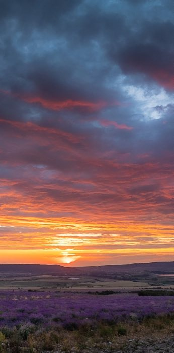
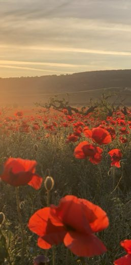
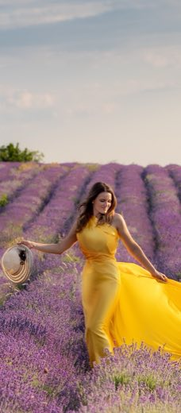
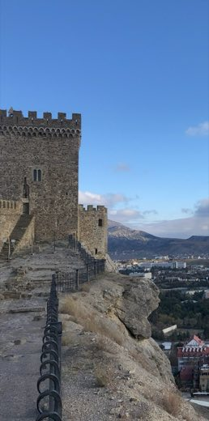
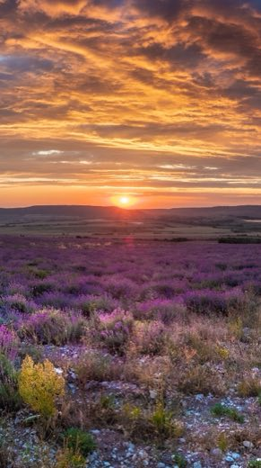
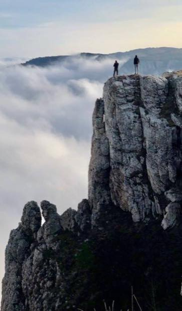

Джип-экскурсия · Бахчисарай
Пещерный город Эски-Кермен
О туре
Пещерный город Эски-Кермен — самый зрелищный из «мёртвых городов» Крыма: вырубленные в скале улицы, осадный колодец и базилика VI века. Подъезжаем на джипах по грунтовке, дальше — пешая часть по плато с обзором на Мангуп.
- джип-тур
- Бахчисарай
- пещерный город
- для детей
- 7 часов
Маршрут
-
1
Выезд из Бахчисарая
Забираем от вашего жилья, разбираем маршрут за кофе
44.7486, 33.8608
-
2
Осадный колодец
Спуск по 90 ступеням в скале (wiki)
44.6087, 33.7392
-
3
Базилика и главная улица
Плато города, виды на Мангуп-Кале и долину
44.6103, 33.7411
-
4
Возвращение
Обратная дорога с остановкой на видовой точке
Стоимость
Билеты
Билеты покупаются на месте, наличными или картой. Цены музеев на 2026 год.
Полезно знать
Что вас ждёт
Начинаем рано, чтобы пройти плато до жары. Джипы поднимают вас к самому входу, поэтому основные силы уходят на прогулку по городу, а не на подход к нему.
По пути разбираем, как жили в вырубленных в скале домах, зачем городу был нужен осадный колодец и почему город опустел в XIV веке.
Отдельно отметим
- Обзорная точка над долиной — лучшее место для фото
- Базилика VI века с остатками фресок
- Спуск в осадный колодец (по желанию)
- Остановка у виноградников на обратной дороге
Фото с тура




